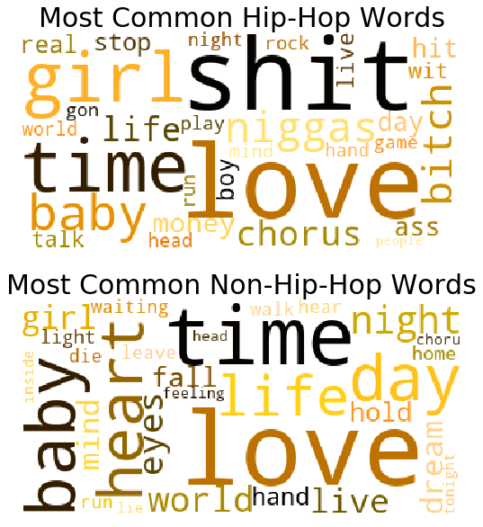
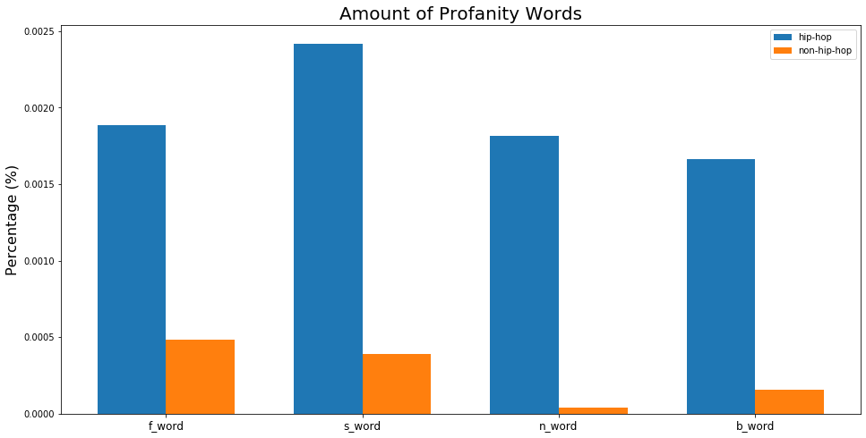
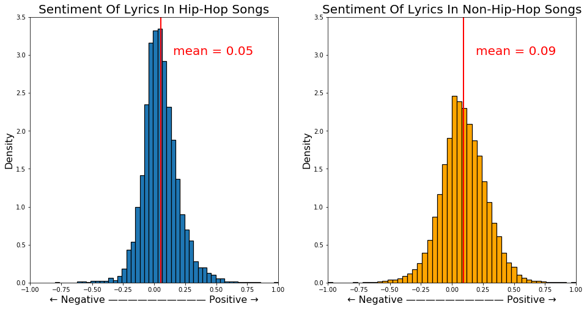
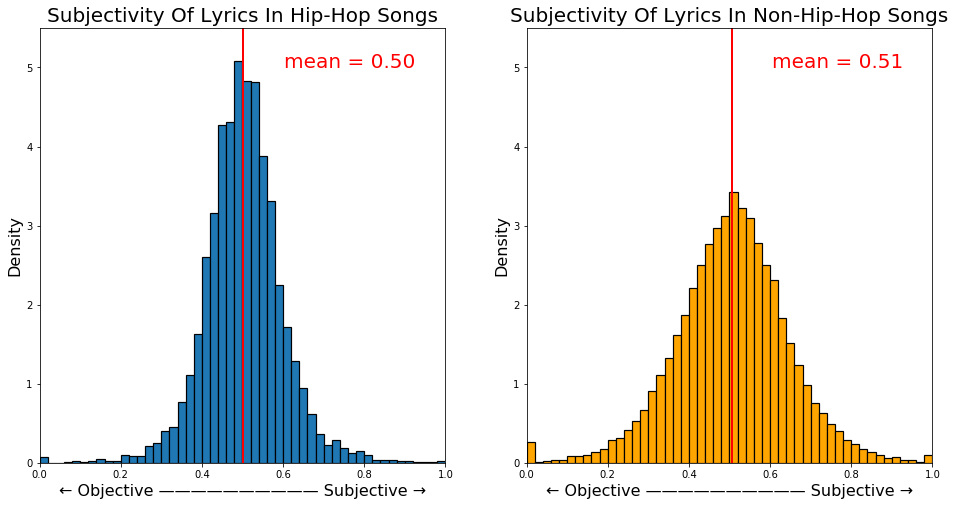
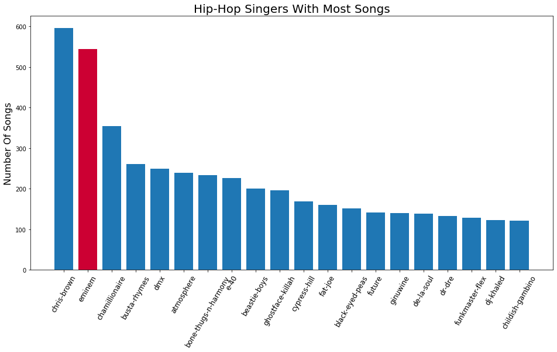
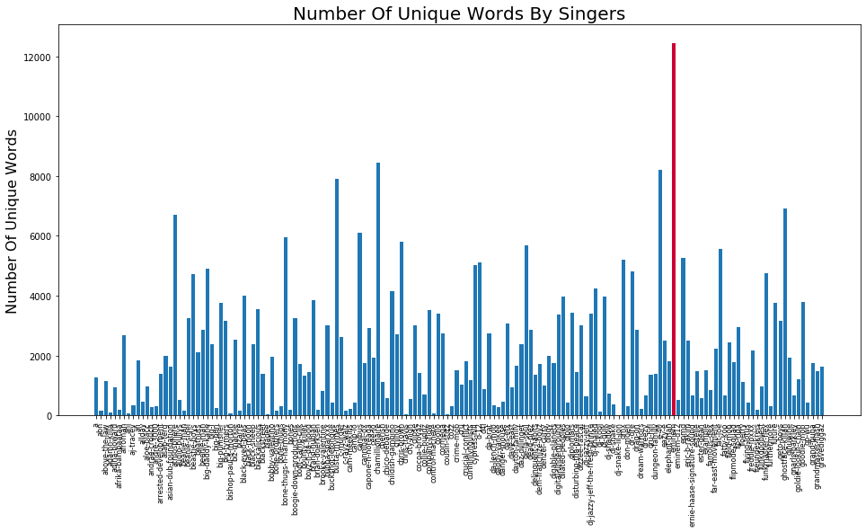
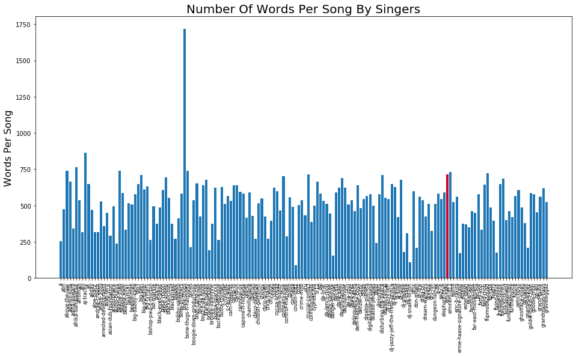
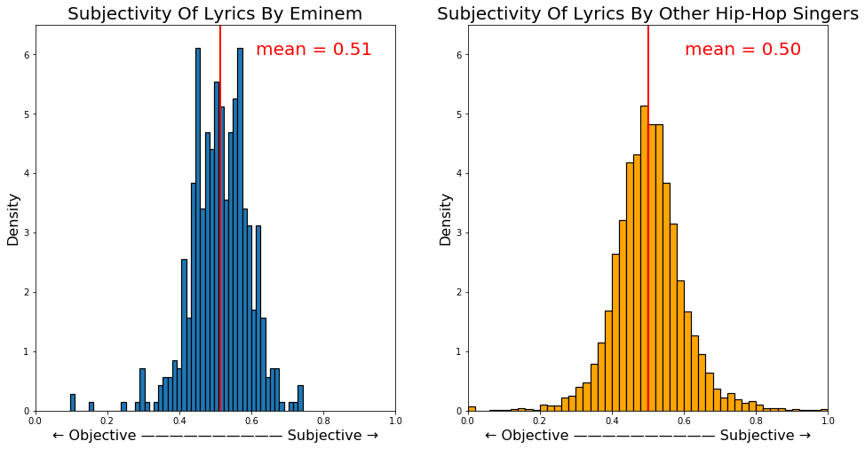

What's Unique About Hip-Hop ? Is Eminem An Alien?

Hip-hop is a very representative genre of songs, as we all know its speed of singing is extraordinary fast. But apart from that, is it really different from other styles? Is Eminem's success just a coincidence? Or does he really have his uniqueness? There are many treasures hidden behind the lyrics, and we can find many rules and characteristics by exploring them. If you have ever dreamed of becoming a hip hop singer, you may want to get some inspiration through the secrets hidden in the lyrics.
The dataset we've got is from Kaggle. It contains lyrics in 125704 songs from all variety of genres and ranging from the year 1968 to 2016.
Table Of Contents
What's Unique About Hip-Hop ? Is Eminem An Alien?Table Of ContentsPart 1. Keep Up With Hip-Hop1. Evolution Of All Lyrics2. Evolution Of Hip-Hop LyricsPart 2. Exceptional Hip-Hop 1. Most Common Words2. Size Of Vocabulary3. Amount Of Profanity4. Sentiment AnalysisPart 3. Are You Eminem?1. Most Common Words2. Size Of Vocabulary3. Amount Of Profanity4. Sentiment AnalysisConclusion
Part 1. Keep Up With Hip-Hop
Let's start our journey by analyzing the most commonly used words in the lyrics.
1. Evolution Of All Lyrics
The following word cloud plots are showing the transition of frequent words appearing in all songs during the half-century. Each one summarizes the 30 most popular words in a decade. The words in lyrics are stemmed and many stopwords are removed prior to generate the word clouds.

From the above picture we can see that in these decades, the songs are basically created around a couple of core words. Topics about 'love' and 'time' are always the eternal theme in lyrics and do not fade as time passes by. Nothing interesting here.
But if you think you don't need to be creative to become a successful Hip-Hop singer, then you are very wrong. Life is never that simple.
2. Evolution Of Hip-Hop Lyrics
Now Let's take a look at the evolution for Hip-Hop only.

According to the word clouds above, there are some interesting changes. First of all, in the early days of Hip-Hop songs, they don't really care about love. The pursuit of sensuality and material is their focus. In the following decades, the trend starts to behave like other genres talking about love and time. Another interesting situation is that dirty words are used more frequently than other songs.
This fact is due to the background of Hip-Hop culture. Hip-hop originated from the bottom people of the United States. At that time, the United States had huge problems such as huge gap between the rich and the poor and racial discrimination. In the face of a huge class divide, the black people who are discriminated against are destitute, are powerless to change. They can only choose to use dirty words and expressions to vent their dissatisfaction with social injustice and dissatisfaction with white people.
Part 2. Exceptional Hip-Hop
In this part, we compare the differences between Hip-Hop and other genres from multiple aspects.
1. Most Common Words
By separating out the Hip-Hop from all other styles, we can have a clear comparison of the most common words. The top 20 frequently used words are picked out in the following word clouds and bar plots.


Although Hip-Hop singers like to use dirty languages, words like 'love', 'time', 'baby' still appears in both categories and rank top. It says these topics are really the most concerned ones among all the works of life.
Hip-Hop singer don't need to be completely different from everyone else. There are many similarities between the singers' hotspots and the topics and they just choose to use another way to express.
2. Size Of Vocabulary
In this part, we want to find some characteristics of Hip-Hop song's word numbers. We all know that Hip-Hop needs to speak fast, but how much faster are they? The following graphs show the characteristics of average word count by all genres. The data are calculated by dividing the total number of words by the number of songs for each genre.

The bar plot above shows that the average words per song are more than twice as many others, which makes this type of genre very distinct. As a common confusion, R&B is hardly distinguished from Hip-Hop by many people. But as depicted above, the number of words between these two is enormous.
In addition, with the assumption that the average song length is almost the same across different genres, it can be concluded that Hip-Hop singers must speak more than twice as faster as other singers.

From the box diagram above, we can also see that there is about 25 percent Hip-Hop whose lyrics are in the same range of other genres. This means that Hip-Hop songs are generally faster, but there are also some slower songs.
3. Amount Of Profanity
Since we all know that Hip-Hop songs like to use junk words, how often do they use them? Now we pick out the four most common swear words and compare their frequencies to other non-hip hop styles.

Although swearing is used in other song styles, we see that Hip-Hop songs use swearing much more than other songs. The most obvious of these is the n-word. It is a very typical word for racial discrimination, other genres are avoiding to make trouble but it aligns with the origin of Hip-Hop culture.
4. Sentiment Analysis
TextBlob is a popular python library to implement sentiment analysis. It returns a polarity and subjectivity value for each song. The polarity score is a float within the range [-1.0, 1.0] where -1 is negative and 1 is positive. The subjectivity is a float within the range [0.0, 1.0] where 0.0 is very objective and 1.0 is very subjective.


We can find that the emotions of Hip-Hop songs are not more negative or positive than the songs of other styles. Conversely, Hip-Hop songs are more focused on neutral styles as its both histogram are much deeper than other genres. Overall, they all tend to be positive
Part 3. Are You Eminem?
Now let's focus on a hip hop singer —— Eminem. As a very successful hip hop singer, let's see if we can find some secrets of uniqueness from his lyrics.

1. Most Common Words
In this part, we want to see what is the difference between the most commonly used words in Eminem's lyrics and others and to check whether Eminem’s success is related to his common words. We compare them by examining some of the most frequently used words.

According to these two word clouds, there are some noticing differences between Eminem and other Hip-Hop singers. Eminem does not emphasize 'love' like others. Instead, he uses more dirty words than usual as 'bxxxx' and 'sxxx' are quite prominent in the left plot. In addition, because he's a white man, he uses many 'white' to represent his identity and culture. That is a huge difference between himself and other typical Hip-Hop singers. The high frequency of words 'eminem', 'shady' and 'slim' also shows his unique existence and alter ego.
2. Size Of Vocabulary
Let's compare the song and lyrics data of Eminem and other hip hop singers. The data are purely collected by counting how many songs belong to each singer.

Eminem has the second largest number of songs among these singers, with approximately 50 songs behind Chris Brown. Such a large output, on the one hand, shows the singer's enthusiasm for music. On the other hand, it also highlights the singer's own talent.

Although his total number of songs is the second, when the number of songs is large, the unique words will not actually increase much for each additional song, as most of the words are actually repeated. So by checking the use of unique words, we can find that Eminem has used the largest number of unique words in his lyrics, reflecting his quite diverse vocabulary list.
We can conclude from this point of view that being a successful Hip-Hop singer still requires a lot of knowledge accumulation. Hip-Hop culture comes from the bottom does not mean that you can put no efforts to learn.
Many people think that it's quite clear to hear Eminem's singing. Now we can know if it's the case by comparing the lyrics speed of the Hip-Hop singers by the number of lyrics in each song, with the assumption that the average lengths of songs are similar.

Eminem’s singing speed is actually fast, as you can see he is still in the top position among all Hip-Hop singers. However, he is not an alien. He still belongs to the normal range of singing speed among all Hip-Hop singers. This shows that Eminem does not stand out by his speed of singing.
3. Amount Of Profanity

The interesting finding here is Eminem uses more than average amount of profane words except the n-word. On the one hand, he still maintains the characteristics of Hip-Hop singers and likes to use swear words to express his dissatisfaction and criticism of the society. On the other hand, he also emphasizes his particularity, and will not discuss too many cultures that are not his own.
4. Sentiment Analysis


Eminem is quite different. His lyrics are even more centric than other Hip-Hop singers, and tend to be somewhat negative. In the meantime, although the averaged subjectivity is neutral, he has many biased songs that expresses his attitude explicitly.
Conclusion
Hip-Hop singers prefer to use much more dirty words in their lyrics, and it has been going on for a few decades. But like most people, they also like to write songs with the theme of love.
In general, Hip-Hop singers stay neutral attitude and speak twice as fast as other genres and are full of swear words.
Eminem’s success is not due to the exceptional speed of singing. Instead, he will change the words in his own songs to express his personality. And his song vocabulary and number of songs also reflect his talent.